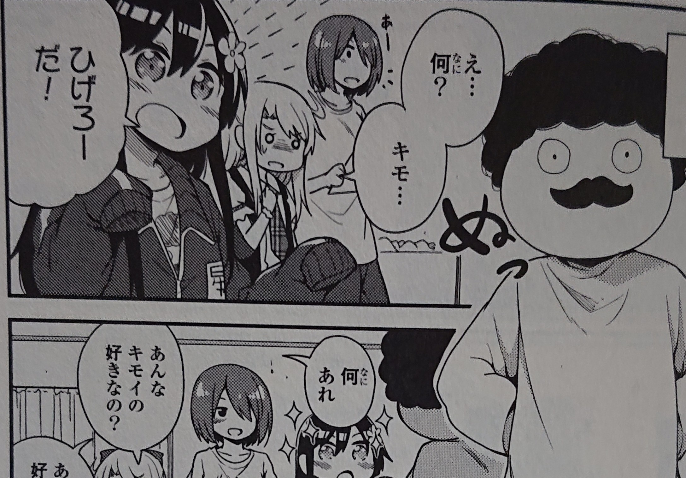
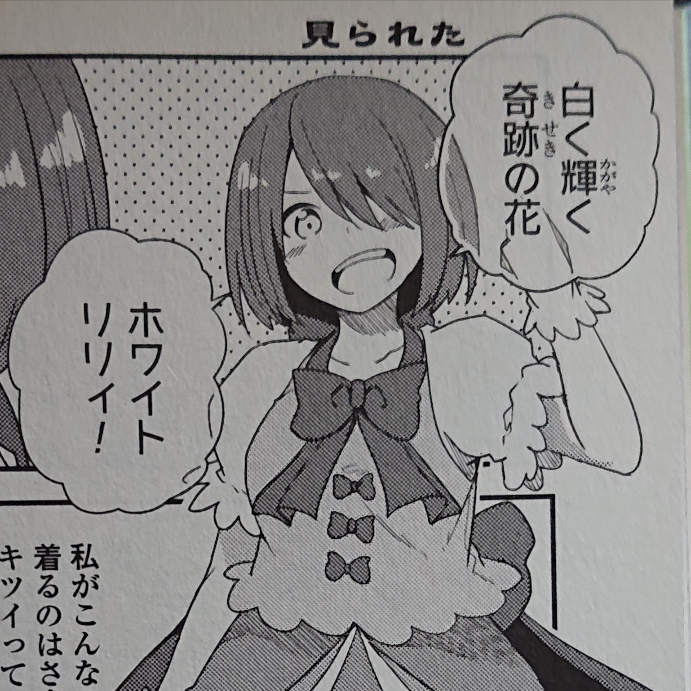
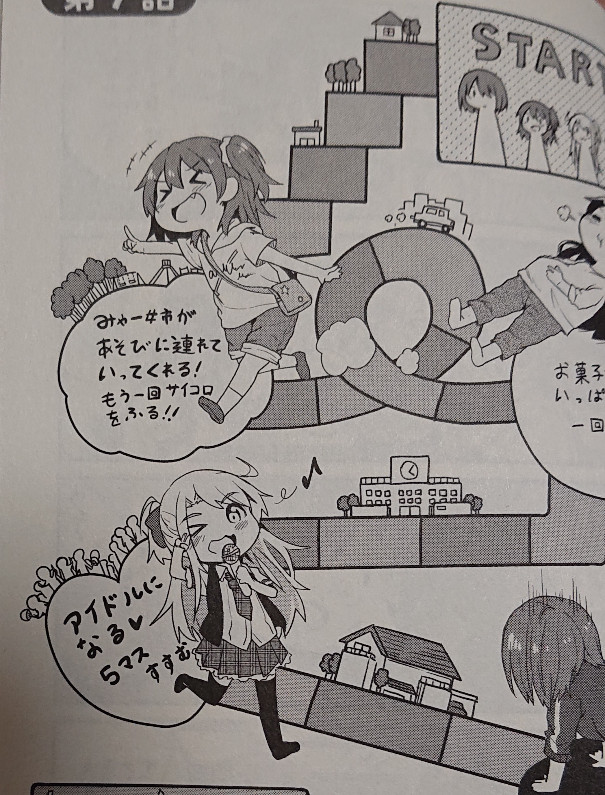
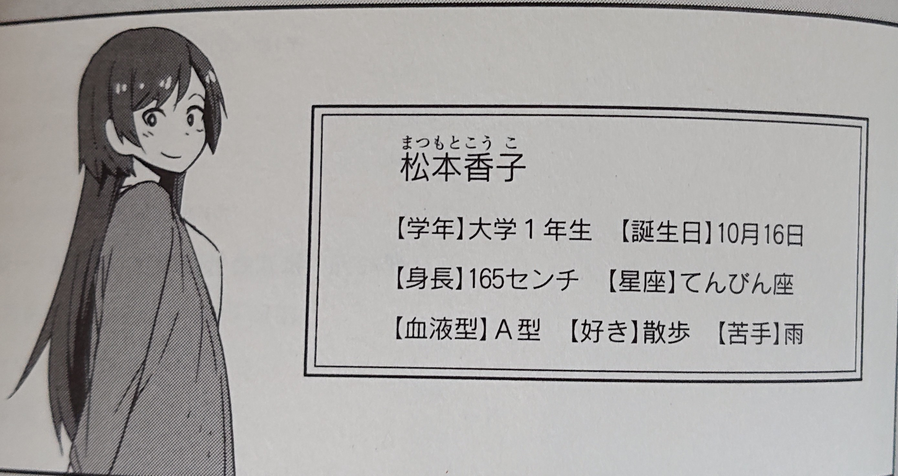
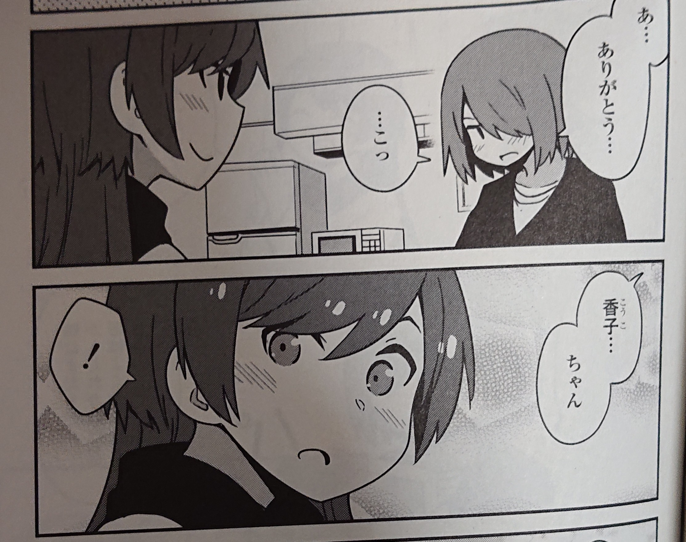
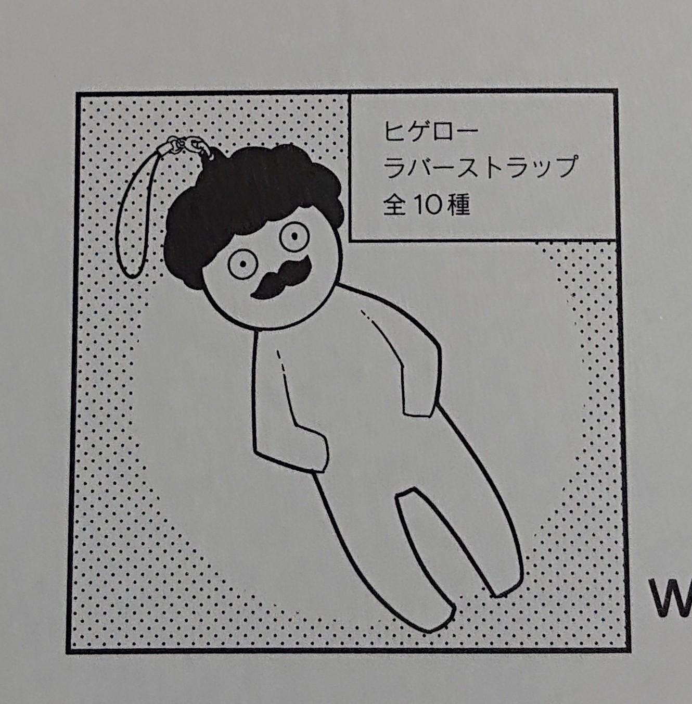

私に天使が舞い降りた!
【スタート！】ボタンを押すとクイズが始まります。
選択式となっています。 全問正解出来るように頑張ってください♪
スタート！
問題１
白咲花がすごく大好きなキャラクターの名前は何でしょうか？
10
正解！

お見事！ 原作１巻、第６話にて、花ちゃんが「ひげろーだ！」と目を輝かせて言っています。
次の問題へ
残念！
残念！ 正解は【ひげろー】です！ 原作１巻、第６話にて、花ちゃんが「ひげろーだ！」と目を輝かせて言っています。
次の問題へ
問題２
星野みやこがホワイトリリィのコスプレをする時に言っている決まり文句はどれでしょうか？
10
正解！

お見事！ 原作１巻、第５話にて、みやこがコスプレをしている時に、セリフも言っています。そしてその時に、ノアに思いっきり見られていました。
次の問題へ
残念！
残念！ 正解は【白く輝く奇跡の花】です！ 原作１巻、第５話にて、みやこがコスプレをしている時に、セリフも言っています。そしてその時に、ノアに思いっきり見られていました。
次の問題へ
問題３
姫坂乃愛が星野ひなたにひとめぼれをした時の効果音は、コミックでは「ドキン...」。
では、アニメではどんな効果音でしょうか？
15
正解！
お見事！ アニメ２話にて、ノアが自分で「トゥンク...」と言っています。個人的にこの効果音はすごく好きです笑
次の問題へ
残念！
残念！ 正解は【トゥンク...】です！ アニメ２話にて、ノアが自分で「トゥンク...」と言っています。個人的にこの効果音はすごく好きです笑
次の問題へ
問題４
コミック第７話にて、みゃー姉をテーマにしたすごろくで遊ぶ場面があります。そのすごろくには、アイドルになることが出来るマスがあります！
では、そのマスの効果は何でしょうか？
15
正解！

お見事！ 原作１巻、第７話の表紙の方に書いてあります。恐らくこれは結構難問だったのではないかなと思っています笑
次の問題へ
残念！
残念！ 正解は【５マスすすむ】です！ 原作１巻、第７話の表紙の方に書いてあります。恐らくこれは結構難問だったのではないかなと思っています笑
次の問題へ
問題５
星野ひなたのクラスメイトである種村小依と小之森夏音。よくみんなから頼りにされているのはどっちでしょうか？
10
正解！
お見事！ 「何でこんな簡単なこと聞いてきたんだ？」と思われたかもしれません。何か、頼りにされそうなキャラクターの名前って「かのん」よりも「こより」っぽいイメージの方が強いのは私だけですかね？
次の問題へ
残念！
残念！ 正解は【かのん】です！ 何か、頼りにされそうなキャラクターの名前って「かのん」よりも「こより」っぽいイメージの方が強いと感じたので、この問題を作ってみました笑
次の問題へ
問題６
松本香子の誕生日はいつでしょうか？
10
正解！

お見事！ ちなみに、１１月２４日はノアの誕生日、９月９日はみやこの誕生日、２月２８日はかのんの誕生日です。
次の問題へ
残念！
残念！ 正解は【１０月１６日】です！ ちなみに、１１月２４日はノアの誕生日、９月９日はみやこの誕生日、２月２８日はかのんの誕生日です。
次の問題へ
問題７
コミックにて、星野みやこが松本香子のことを名前で呼ぶようになったのはどこからでしょうか？
10
正解！

お見事！ 割と後半の方ですよね笑 みやこが香子にバレンタインチョコを渡した時に、呼ぶようになります。
次の問題へ
残念！
残念！ 正解は【第５０話】です！ 割と後半の方ですよね笑 みやこが香子にバレンタインチョコを渡した時に、呼ぶようになります。
次の問題へ
問題８
ひげろーラバーストラップは全部で何種類あるでしょうか？
10
正解！

お見事！ この問題も割と難問だったかもしれません。
次の問題へ
残念！
残念！ 正解は【１０種類】です！ この問題も割と難問だったかもしれません。
次の問題へ
問題９
花ちゃんの誕生日にみやこがあげたプレゼントは何でしょうか？
10
正解！
お見事！ 実は最初は髪飾りを渡そうとしていましたが、重いかもと思い、結局渡せずにいたところ、成り行き的にケーキを作ることになりました。
次の問題へ
残念！
残念！ 正解は、【ケーキ】です！ 実は最初は髪飾りを渡そうとしていましたが、重いかもと思い、結局渡せずにいたところ、成り行き的にケーキを作ることになりました。
次の問題へ
問題１０
わたてんの主題歌を担当している歌唱ユニット【わたてん★５】
ユニットメンバーは、長江里加さん、大空直美さん、大和田仁美さん、鬼頭明里さん、後１人は誰でしょうか？
15
正解！
お見事！ 上田麗奈さんはみやこ役、山田由香さんはわたてんのシリーズの構成を担当された方、中川洋未さんはキャラクターのデザインを担当された方です。
結果へ
残念！
残念！ 正解は【指出毬亜さん】です！ 上田麗奈さんはみやこ役、山田由香さんはわたてんのシリーズの構成を担当された方、中川洋未さんはキャラクターのデザインを担当された方です。
結果へ
このクイズのサイトは楽しんで頂けたでしょうか？ もし楽しんでいただけたなら、すごく嬉しいです♪
何問正解出来たのかをTwitterでツイートしてみましょう！（上の文をコピーしてね！）
お疲れ様でした！ このページを更新すると、もう一度試験を受けることが出来ます。 百合センター試験のサイトに戻りたい場合は、下のボタンを押してください。